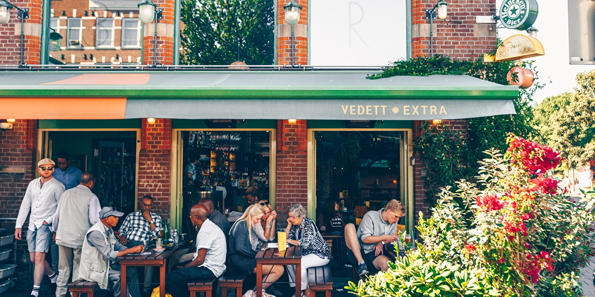
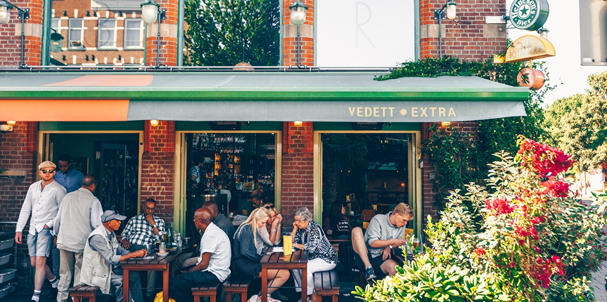

Contact
Bar Botanique Bar Botanqiue ligt in de Dapperbuurt in Amsterdam Oost, in het midden tussen de Indischebuurt en de Linnaeusstraat, met de dappermarkt om de hoek. Het is een levendige buurt waar het dag en nacht bedrijvig is. Uiteraard is er ruimte genoeg om je fiets te parkeren, maar ook met het openbaar vervoer en de auto is Bar Botanique prima bereikbaar. Tram 14 stopt bij halte Pontanusstraat, om de hoek van Bar Botanique en tram 19 stopt bij halte Eerste van Swindenstraat, vanaf daar is het 5 minuten wandelen. Met de auto is Bar Botanique prima bereikbaar. Vanaf de IJ-tunnel is het slechts 2km en de Piet Hein-tunnel is nog dichterbij. In de Dapperbuurt is altijd wel ruimte om te parkeren.